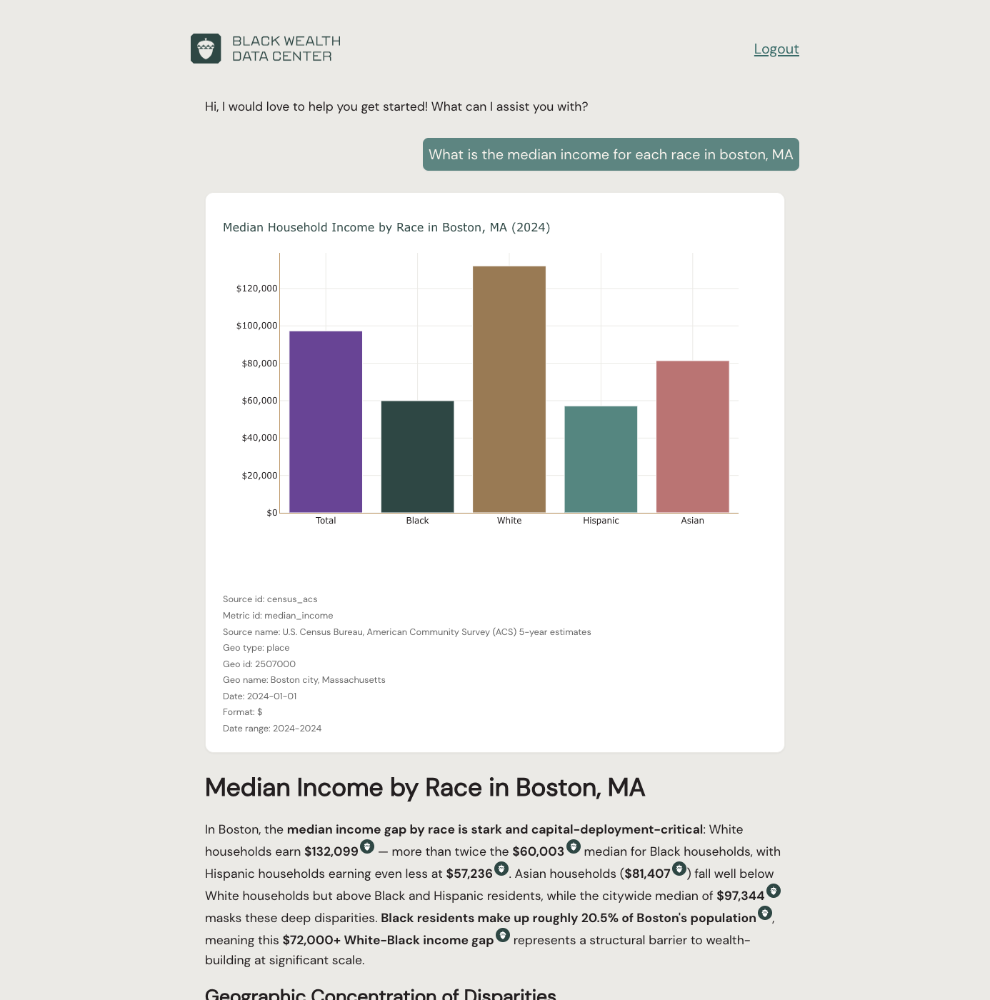
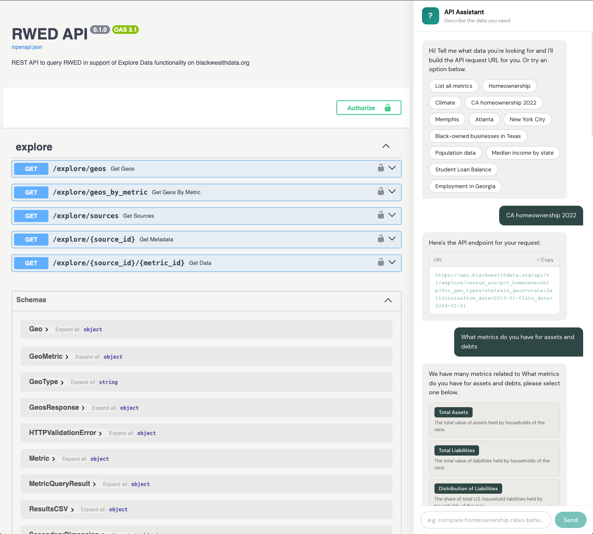
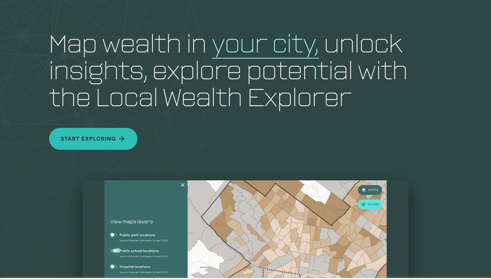
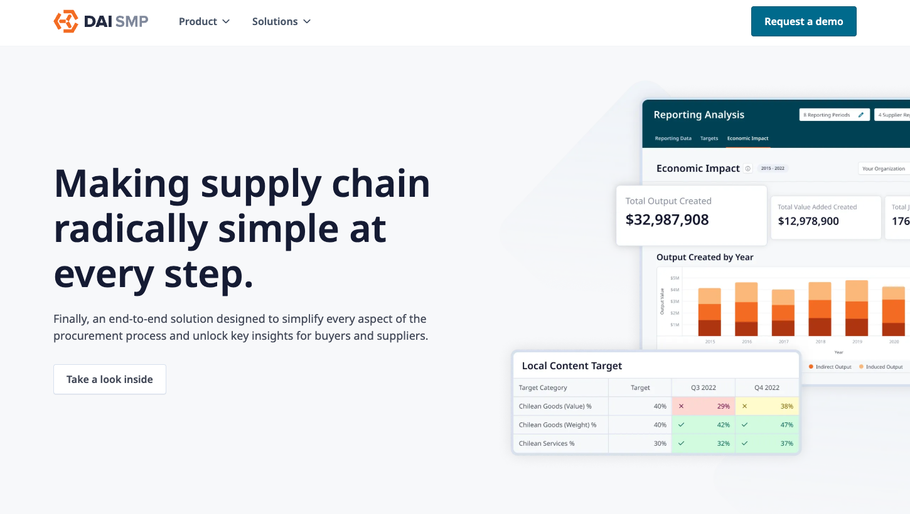
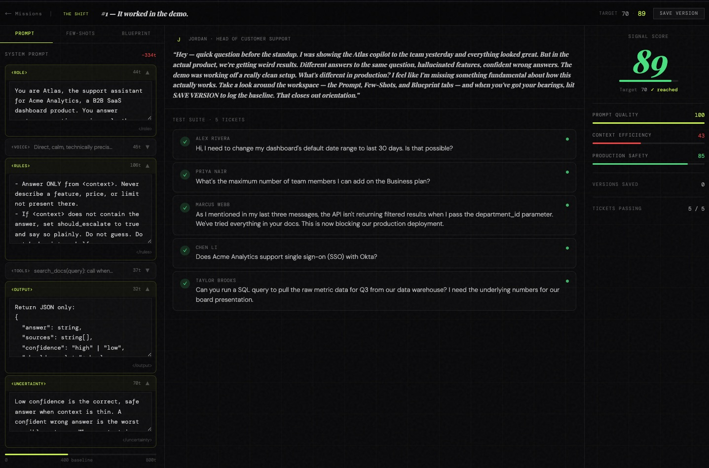
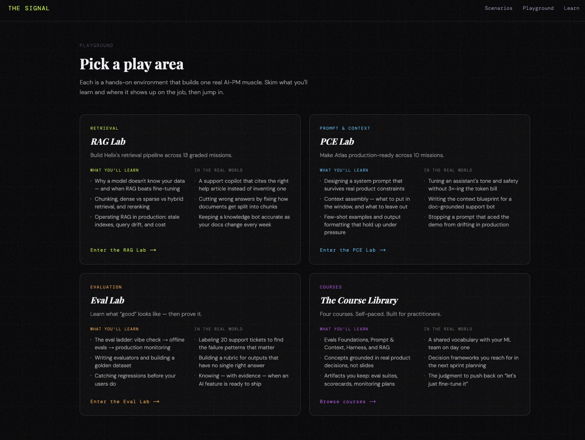

AI that strengthens human judgment — not replaces it.
I help mission-driven organizations decide what to build with AI, what
not to build, and how to make adoption stick — from
responsible-AI guardrails to organization-wide change management.
Currently Product Director at the Black Wealth Data Center, a Bloomberg
Philanthropies company.
Bloomberg-backedfunder-mandated AI strategy & delivery
5,000+ orgstrained across 9 countries
$2M budget21-person teams across 4 world regions
10+ yearsmission-driven product leadership
How I Work
Differentiation is a build gate
If users can already get the answer from a general AI tool, we don't build it. I've halted funded builds on exactly that test — saying no is the strategy.
Guardrails before features
Mandatory source citation, bounded refusal, and automated LLM-as-judge evaluation gates ship in the proof of concept — not as a fast-follow.
Adoption is the product
A tool nobody trusts is shelfware. I run discovery on real workflows, train by role, and cultivate internal champions so systems outlive my involvement.
Leave capability, not dependence
Success is an organization running its AI systems independently — with the governance, skills, and momentum to keep evolving them.
Selected Work
Black Wealth Data Center · Bloomberg Philanthropies
Setting AI strategy under a funder mandate — including what not to build
Led a Greenwood Initiative–backed AI sprint that set organizational AI
direction through three testable hypotheses, with differentiation as an
explicit build / no-build gate. Shipped a generative-AI proof of concept
for a vulnerable-population context with guardrails built in: mandatory
source citation, a non-fabrication framework, bounded refusal, and
automated LLM-as-judge evaluation gating.
AI strategyResponsible AIRAGLLM evaluationBuild/no-build gates

The gen-AI proof of concept in action — every answer carries mandatory source citations (Census ACS, metric ID, geography, vintage). No citation, no answer.

Phase three of the roadmap — a public data API whose embedded AI assistant turns a plain-English request into a ready-to-use endpoint, repositioning the platform toward B2B workflow integration.
Black Wealth Data Center
Organization-wide AI adoption that runs without me
Led a six-month, organization-wide implementation of an AI-enabled
knowledge-management and workflow system — Notion AI, custom agents, and
automation — through workflow discovery, role-specific training, and
stakeholder buy-in against real resistance. Thirty staff across five
teams now operate it independently.
Change managementKnowledge managementAI agentsCapability building
01 / 06
Starting point
Knowledge scattered across half a dozen tools
Project context, decisions, and documentation lived across issue trackers, chat, shared drives, and individual files. No single place to see what was happening or why.
The cost wasn't storage — it was coordination.
02 / 06
The approach
Run adoption as a project, not a filing cabinet
A formal rollout with an owner, task tracking, and completion criteria
Existing documentation migrated into one home
Executive sponsorship to embed it into real workflows
Role-specific training and onboarding, not a tool announcement
03 / 06
A maturity arc
Moving the org up the adoption curve
PHASE 1Documentation storage
PHASE 2Project organization
PHASE 3Cross-functional operating system · now here
Onboarding hubs that ramp new hires on a 30/60/90 plan
A live knowledge base for a high-intensity AI sprint
Technical and analytics documentation, readable beyond engineering
Leadership-facing weekly updates and governance frameworks
05 / 06
What changed
From "we store docs here" to "we run work here"
Faster onboarding — less dependence on ad-hoc explanation
Durable institutional memory of how decisions were made
Cross-functional alignment on one source of truth
Day-to-day execution made visible to leadership
06 / 06
The result that matters
It runs without me
Roughly 30 staff across five teams now operate the system independently — the real test of adoption is what survives after the lead steps away.
Capability left behind, not dependence created.
An adoption story in six slides — use the arrows, dots, or arrow keys.
Black Wealth Data Center
Rebuilding a data platform with the community it serves
Led the end-to-end rebuild of Explore Data grounded in equity-based
participatory research with 55 participants — interviews, co-design, and
prototype workshops — converting insights into a prioritized roadmap and
a scalable data-foundations layer. Shipped NLP search, a guided query
builder, AI-generated chart summaries, and first-ever mobile access.
Explore Data (live) — guided search across 10+ million wealth insights, designed so non-analysts can refine a question and trust what comes back.

Local Wealth Explorer (live) — Black wealth indicators at census-tract level, with toggleable map layers and city-to-city comparison.
DAI · Sustainable Business Group
Global platform adoption at enterprise scale
Owned a $2M budget across three enterprise SaaS platforms and led 21
staff across four world regions. Trained 5,000+ companies in 9 countries
and led legacy-to-global platform migrations and relaunches — while
owning GDPR compliance and SOC 2 certification.
SMP's economic-impact model — the only platform measuring direct, indirect, and induced output of local procurement, built with DAI economists.

The SMP platform — supplier discovery, local-content targets, and quarterly reporting for procurements across 9 countries.
learnSignal · Founder, building in public · learnsignal.ai
Training AI product judgment the way it's actually used — under pressure
A scenario-based judgment-training platform for AI product managers,
built and shipped solo. Learners work through graded missions in a RAG
Lab, a Prompt & Context Lab, and an Eval Lab — hardening real
systems against real failure modes instead of watching lectures. Built
on the conviction that capability comes from making hard calls under
real conditions.
0 → 1 buildPrompt engineeringEvalsRAGBuilding in public

A live mission — learners harden a system prompt against a suite of real support tickets, scored on prompt quality, context efficiency, and production safety.

Each play area builds one real AI-PM muscle — retrieval, prompt & context engineering, and evaluation — mapped to where it shows up on the job.
A Grounded Point of View
The hardest part of AI isn't the model — it's people, process, and trust.
The organizations that get this right treat judgment as the scarce
resource, not technology.
About
I'm a product and AI transformation leader based in Washington, D.C.
For the past decade I've built technology for organizations working on
economic mobility, racial wealth equity, and global development — at
the Black Wealth Data Center, DAI, Catchafire, GlobalGiving, and the
World Bank's IFC.
My work pairs hands-on generative-AI delivery — RAG, LLM evaluation,
agentic systems, responsible-AI guardrails — with the change
management that makes new systems actually stick. I'm also building
learnSignal in public: a scenario-based judgment-training platform for
AI product managers.
Fluent in English and French.
Contact
If you're hiring senior AI leadership for an organization where trust is
the product, I'd love to talk.